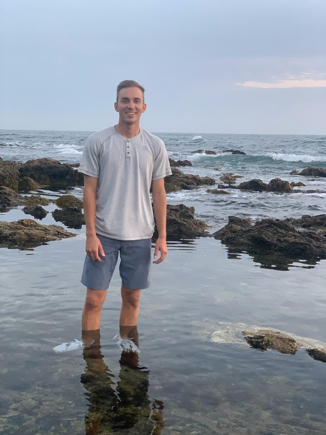
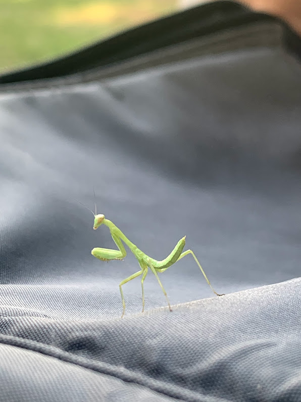

- Education
- Brigham Young University, BACH
- University of Balloon Animal Making, BAMU
- SO cute Tech College, BTFL
- Experience
- Make lots of money
- Do cool stuff
- Hold breath for 14 min with only one break
- Skills
- num chuck skills
- Cage fighting skills
- computer hacking skills
Resume
Personal Life
He grew up young, but he didn't have a choice. It's wasn't easy but it was the only way. Growing up in the jungles of India is never easy. Especially when you were raised by wolves. (Don't mind wolves dont live in the jungle) When he was still a wee lad he realized he wasn't actually a wolf and after getting his body crushed by an Anaconda snake he rode by himself on the belly of a bear to the nearest village over 100 miles away where he was found and restored to health. Although this sounds like it is a copy of the Jungle Book it isn't and is a totally original orgin story.

His Rise to Patriot
After his adoption to a family in the United States he became a world renound photographer. A fond story he recalls is the time when he legally adopted a Bald Eagle and then fed the Eagle the same steroid food that they feed chickens in those chicken farms. Once the Eagle became sufficiently big he harnessed the Eagle with rope, saddled it with an American flag and rode it 2000 feet up into the sky where he took this picture.
Fun Facts
His masterpiece photograph described in his own words:
"The beauty of this picture is in how random it is. Check out this photo of a praying mantis guys. This little guy was about half the size of my pinky finger. If you look closely he looks like a green backwards Nike Swoosh. His exact species and gender is unknown."
To check out more about these critters click Here
Contact Info
gablebriggs@hotmail.com
801-801-1801